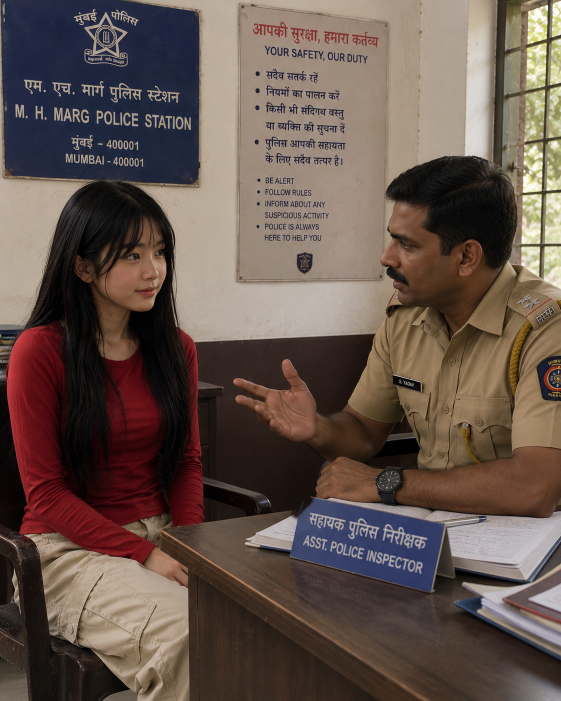
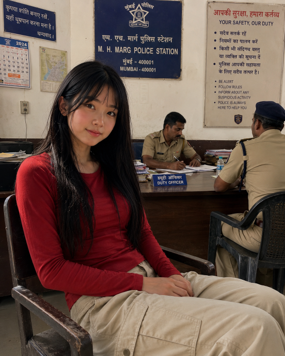

Patricia sat in the hard metal chair of the Agra police station, her hands clenched in her lap. The ceiling fan above her creaked with every slow turn, stirring the hot air but offering little comfort. Her bicycle was locked outside, and her backpack sat on the desk across from her, where a stern-looking officer leafed through her passport. She’d already told them everything — about her uncle, about the car near the Taj Mahal, about how she’d lost sight of him in the traffic — but they only exchanged looks and spoke quietly in Hindi, their tone making it clear they didn’t quite believe her. The longer she sat there, the more real it felt: she wasn’t leaving this station on her own. |
 |
|  |
Hours passed before another officer arrived, one who spoke English more clearly. He explained, gently but firmly, that her parents had been contacted, and arrangements were being made to send her home. Home — Australia. The word hit like a stone in her chest. She wanted to protest, to insist that her uncle was still out there somewhere, that she couldn’t just abandon him. But her throat tightened, and all that came out was a whisper. By the next morning, she was escorted through the airport, her wrists still faintly marked from where she’d been held. As the plane lift ed into the sky, Patricia stared out the window, tears blurring the lights below. She didn’t know how — or when — but she made herself a promise right then: she would start her adventure again, and she would find him. |